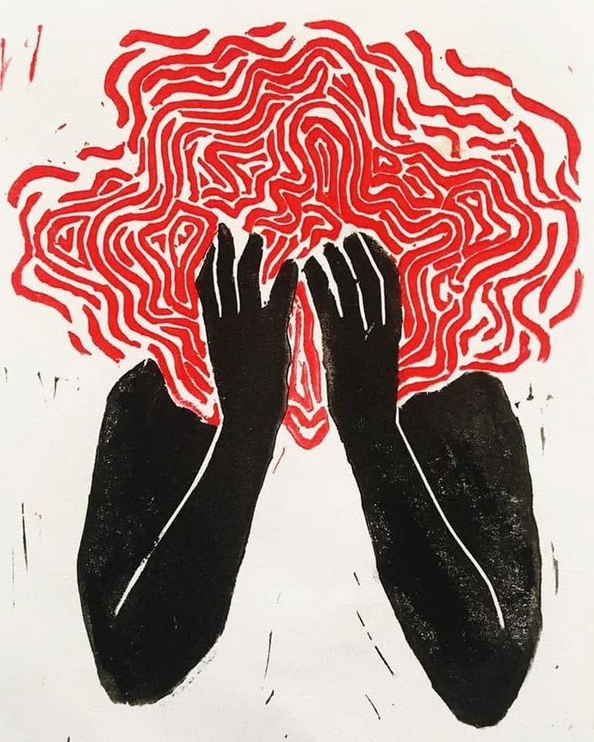
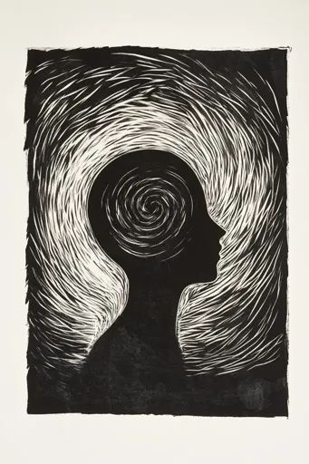
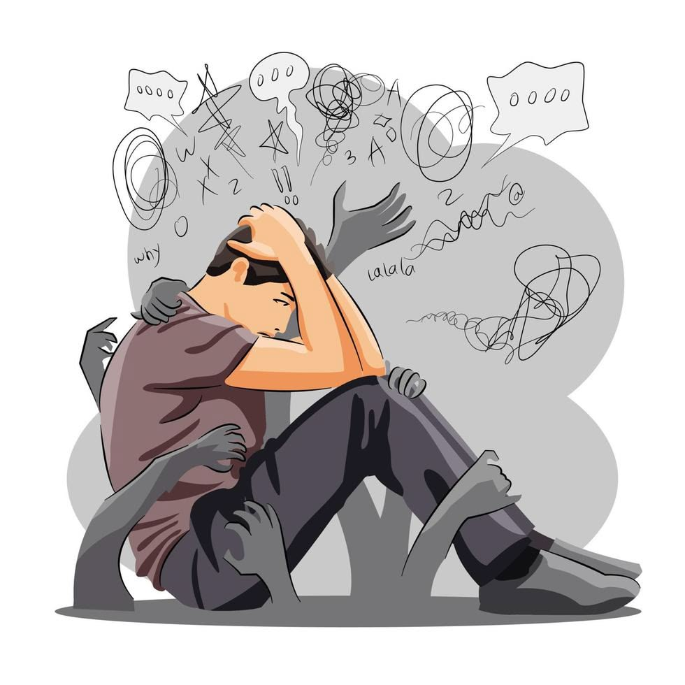
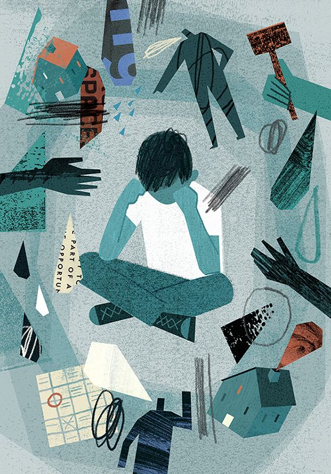

⚡
Stresi
është një reagim i trupit dhe mendjes ndaj situatave të vështira ose presionit. Është një ndjesi që na bën të ndihemi të tensionuar, të lodhur dhe të shqetësuar.


SHËNDETI MENDOR
Dy ndjenja që ndikojnë në mendjen dhe trupin tonë
Punoi: Fatbardha & Genci
Fillo të lexosh ↓ÇFARË JANË?
është një reagim i trupit dhe mendjes ndaj situatave të vështira ose presionit. Është një ndjesi që na bën të ndihemi të tensionuar, të lodhur dhe të shqetësuar.


është një ndjenjë shqetësimi, frike ose pasigurie, shpesh edhe kur nuk ka një rrezik të menjëhershëm. Mund të shfaqet si mendime të tepërta, frikë, nervozizëm ose panik.


FAKTORËT QË I SHKAKTOJNË
Ngarkesa e madhe me mësime dhe detyra
Provimet dhe frika nga notat
Problemet me shokët ose shoqet
Konfliktet në familje
Ndryshimi i shkollës ose ambientit
Mungesa e gjumit dhe pushimit
Presioni për të qenë gjithmonë i suksesshëm
Përdorimi i tepërt i rrjeteve sociale
SI NDIKOJNË TE NXËNËSIT?
Vështirësi në përqendrim dhe në të mësuar.
Lodhje fizike dhe mendore.
Shqetësim, nervozizëm dhe ndryshime në humor.
Mungesë motivimi dhe interes për shkollë.
Probleme me gjumin.
Nëse zgjasin për një kohë të gjatë, mund të ndikojnë edhe në rezultatet në mësime dhe në marrëdhëniet me të tjerët.
SI MUND TË PËRBALLOHEN?
Pushimi i mjaftueshëm.
Gjumi i rregullt.
Aktiviteti fizik.
Organizimi i kohës dhe planifikimi i detyrave.
Biseda me një person të besuar.
Marrja e frymës dhe relaksimi (p.sh. ushtrime të frymëmarrjes).
PËRFUNDIM
Stresi dhe ankthi janë ndjenja normale, por kur bëhen të shpeshta dhe të forta, mund të dëmtojnë shëndetin tonë mendor dhe fizik, si dhe të ndikojnë në suksesin tonë në shkollë. Është e rëndësishme t’i kuptojmë, t’i menaxhojmë dhe të kërkojmë ndihmë kur kemi nevojë.